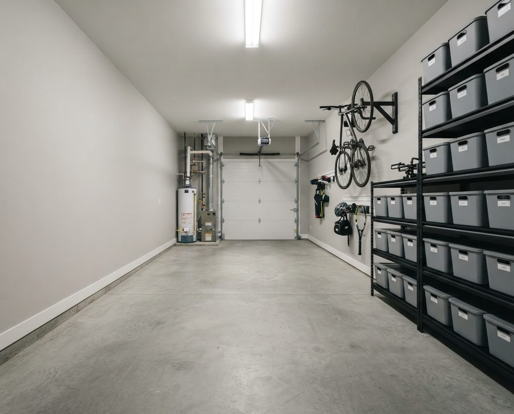
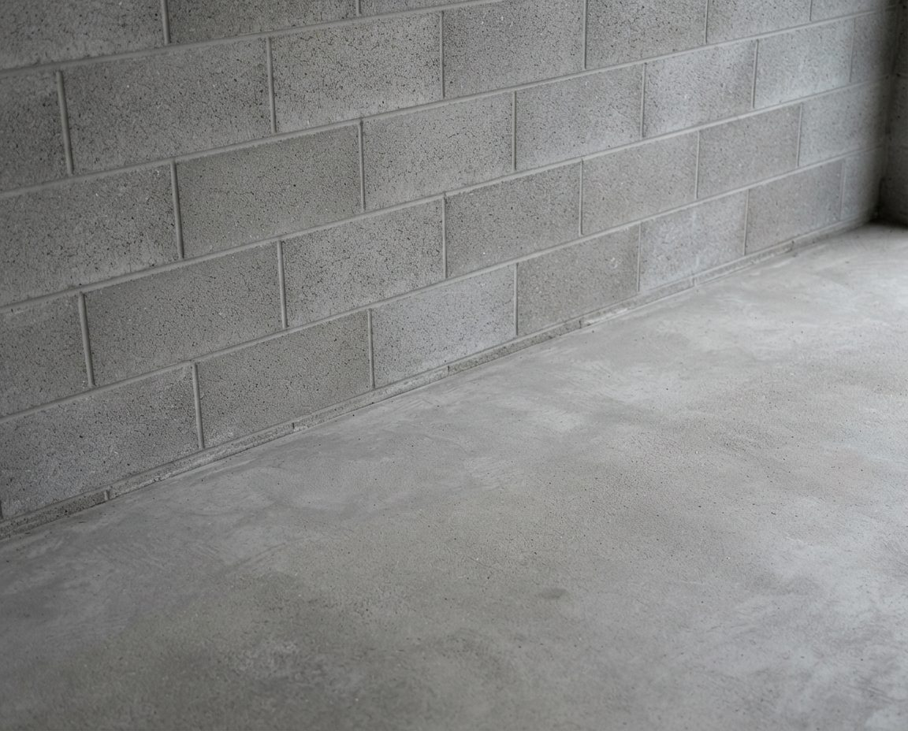
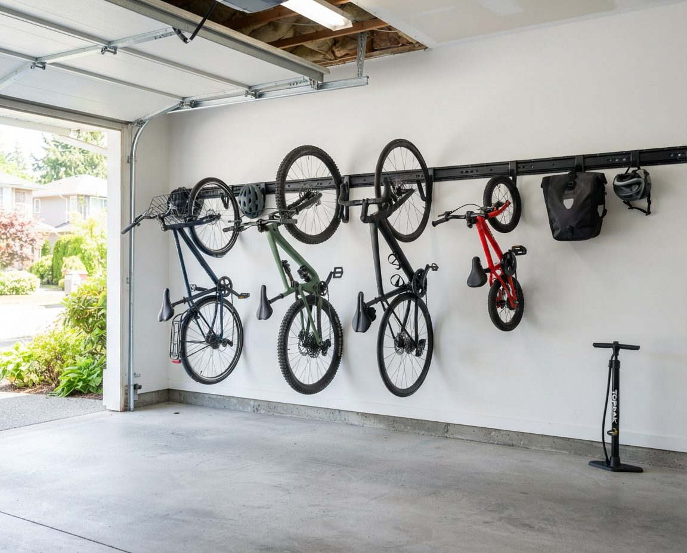
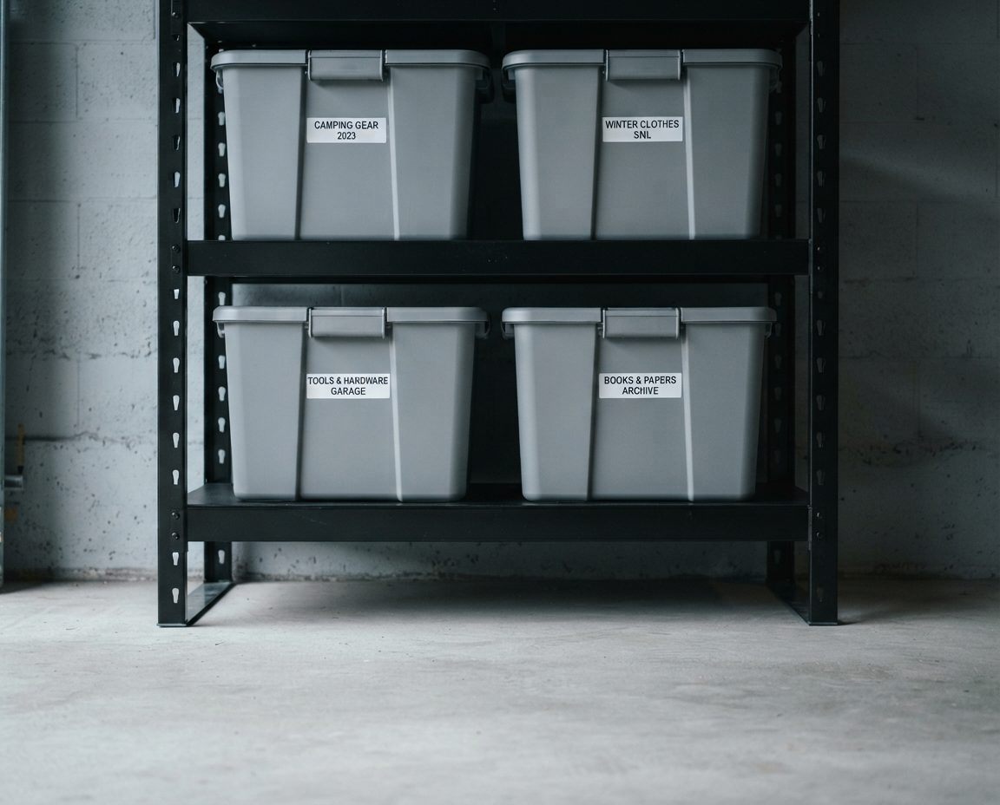

Point Grey Garages, Block by Block
West Point Grey runs from English Bay south to West 16th Avenue, and from Alma Street west to Blanca Street, where the University Endowment Lands begin. About 13,000 people lived there at the 2016 census. The Municipality of Point Grey was formed in 1908 and joined Vancouver on January 1, 1929, and in 1922 it passed a zoning bylaw that reserved the area for houses and their outbuildings. The garage behind a Point Grey house is one of those outbuildings, and many of them are close to a century old.
Building came in waves. Streetcar service on West 4th Avenue arrived around 1911 and reached the higher ground to the west in 1912, with a line up Sasamat Street linking 4th and 10th. The Vancouver Heritage Foundation's house tour lists homes such as 4586 West 6th Avenue (1910), the Campney House at 4629 West 2nd (1928), a Tudor Revival at 4735 West 2nd (1931) and the Spanish Colonial Revival house at 4585 Bellevue Drive (1936). Growth picked up again once the university opened its Point Grey campus in the 1920s. Since then many of those houses have been replaced, so a single block can hold three kinds of garage:
- The original lane garage, a detached wood-frame building sized for a car from the 1920s or 1930s, often with a patched slab and no insulation.
- The hillside garage on the streets north of West 4th, where the land drops steeply toward English Bay and the garage is often set into the slope.
- The rebuild garage, usually a double, in a newer house that replaced an older one.
Each needs a different plan, so the first visit starts with measuring the space, the car and anything long that has to fit, such as a kayak, and asking who uses the garage and for what.
Lane Garages Behind Streetcar-Era Houses
A garage built for a Model A is narrow by modern standards, and Point Grey households tend to fill it with more than a car: bikes, beach gear, garden tools and decades of household overflow. The floor fills first because it is the easiest place to put things down, and after a few years the car lives on the pad outside.


Storage on one wall, floor left openAn example layout, not a photo of a Point Grey client's garage. In a narrow detached garage, shallow shelving down one side and hooks near the door give the car back its floor.
We work from the side walls and the rafters. Shelving on the long wall stays shallow, usually 30 to 40 cm, so a car door can still open. Bikes hang by the wheel near the lane door. Seasonal bins go overhead only where the rafters are sound and the door has room to swing. Studs in garages this old are often irregular or patched, so heavy loads go on freestanding units fixed back to the frame, and tall units are strapped, as explained in our earthquake-ready garage storage guide. If the car will not fit with the doors open, we say so on the first visit and plan the garage as a storage, bike and gear room instead. When the garage is so full that clearing it comes first, our laneway garage clearing service does that before the build.
Garages Cut Into the Slope Above English Bay
North of West 4th Avenue the ground falls steeply toward Point Grey Road, Jericho Beach and NW Marine Drive, which began construction in 1908. On these streets a garage is often partly below grade, with soil against the back wall or one side. Concrete with wet ground behind it passes moisture through all winter, and the water leaves dissolved minerals behind as a white crust called efflorescence. Anything stored against that wall gets damp from behind.


Clean the wall, then keep storage off itAn example wall, not a photo of a Point Grey client's garage. Removing the crust shows how much moisture the wall carries; the shelving still goes on the dry walls.
In a hillside garage we clean the crust off first so you can see what the wall is doing, then keep storage on the drier walls or on freestanding units held clear of the damp one. Nothing sits on the slab, and the bottom shelf starts at least 15 cm up. If water is running in rather than seeping, a drainage contractor needs to see it before we build anything. Our garage floor cleaning in Vancouver covers efflorescence and stained slabs in more detail.
Kayaks, Paddleboards and Wetsuits
Three beaches sit at the bottom of the hill: Jericho, Locarno and Spanish Banks. The Jericho Sailing Centre stores small boats for members, at $211 a season for a kayak or a stand-up paddleboard, $255 for a double kayak and $169 for a windsurfer under its 2026–27 rates, and it notes there is sometimes a waitlist. Plenty of Point Grey households keep their boards at home instead, and a 3.5-metre paddleboard is the hardest single item to fit into an old lane garage.
Long gear goes overhead or flat on a side wall, never on the floor. A paddleboard or single kayak rides on padded wall cradles or a ceiling hoist above the hood of the car, positioned clear of the door track. Paddles, PFDs and pumps hang on hooks beside it. Wetsuits and booties get a drip zone near the door: a rail with wide hangers over a tray, away from the stored bins, so they dry instead of souring in a bag. Beach chairs, umbrellas and the summer cooler go up high in October and come down in May. We measure every board and boat first; a double kayak or a sailing dinghy usually does not fit a single garage with a car in it, and we tell you that before we quote.
Bikes for UBC and Pacific Spirit
Pacific Spirit Regional Park lies immediately south of the neighbourhood, and UBC is a short ride past Blanca. Students heading to Lord Byng Secondary, Queen Mary and Queen Elizabeth Elementary, École Jules Quesnel and West Point Grey Academy add their own bikes. A typical family garage here holds a commuter bike, a muddy trail bike and a row of kids' bikes, and the climb up from the beach is why many families add an e-bike.

Light bikes hang by the wheel on a rail, the heaviest bike stays on the floor nearest the door, and helmets, lights, locks and rain shells share one shelf beside them. Trail bikes get a spot near the door with a mat underneath, because Pacific Spirit mud arrives with them for half the year. E-bikes park on a marked bay with their charger on a clear, hard surface away from stored bins. Our garage bike storage in Vancouver page covers racks, hoists and e-bike charging in detail.
Rain, Salt Air and Cardboard
Vancouver airport records precipitation on about 169 days a year, and November, December and January each average more than 170 mm. An unheated detached garage sits at roughly outdoor humidity from October to March. Within a few blocks of English Bay, salt in the air adds to the rust on bike chains, hand tools and the springs of the garage door.

Cardboard pulls moisture up from the slab and out of the air, then sags and smells. Photos, documents, holiday decorations and sleeping bags are the usual losses. Our rules for a Point Grey garage: nothing in cardboard, nothing touching the floor, nothing pressed against an outside wall. Lidded plastic bins go on shelving with the bottom shelf at least 15 cm up, the units stand a few centimetres off the wall, and tools go in closed drawers or a cabinet rather than on open pegboard if the garage is close to the water. Paper archives and family photos move into the house. If you already see black spots on drywall or smell must that will not leave, read our page on mould in Vancouver garages first, because those surfaces get treated before new storage goes against them.
Multiplex and Laneway Lots
In late 2023 Vancouver folded most single-family zones into a new R1-1 zone that allows multiplexes of up to four units on a standard 33-foot lot with a lane, and more on wider lots. Parking on these projects goes at the back of the lot off the lane, and the city sets no minimum. On Point Grey's larger lots that often means an old garage is coming down, and the storage it held has to fit into much less space afterwards. Laneway houses, allowed in Vancouver since 2009, do the same thing on a smaller scale.

We clear the old garage before demolition, sort what is worth keeping, and plan storage for what comes next: a bike room, a gear wall under a carport, labelled bins sized to a locker, and a separate zone for each household on the lot. When the job is a full clearance, our garage cleanout service in Vancouver handles donation and disposal on the day.
How the Job Runs
The first visit is free. We walk the garage, measure the car, the doors, the ceiling and any boards or boats, check the walls and slab for damp, and give you a written plan and a fixed price. On the day we empty the garage onto the driveway or the lane, sort into keep, donate, recycle and dispose, clean the empty floor, then build back in: the bikes and beach gear by the door first, then daily storage, then the overhead and seasonal zones. A single lane garage is usually half a day to a day, and a double usually one day. Donations and disposal leave with us.
Shelving, bins, rails and hoists are quoted separately at cost, and we reuse sound shelving you already own. For hardware chosen for a coastal garage, see our garage storage solutions in Vancouver; for the city-wide service, see garage organization in Vancouver.